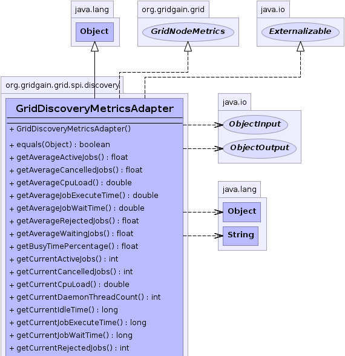
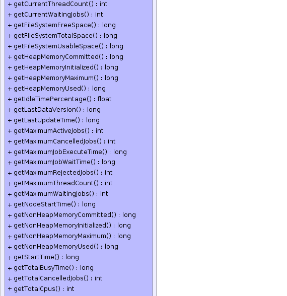
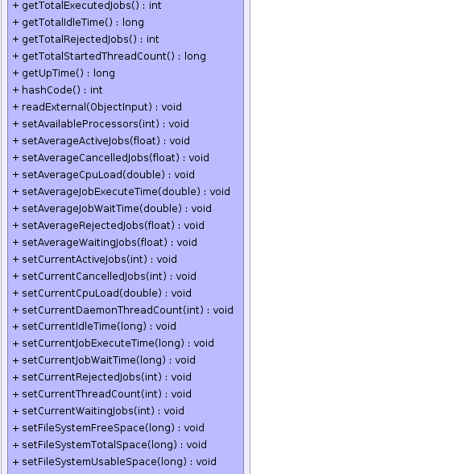
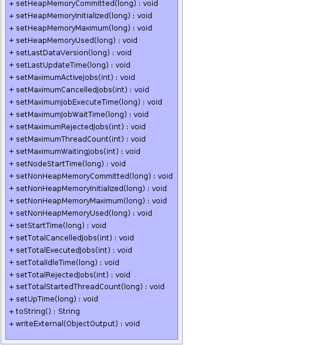

org.gridgain.grid.spi.discovery.GridDiscoveryMetricsAdapter
org.gridgain.grid.spi.discovery.GridDiscoveryMetricsAdapter
|
GridGain™ 3.1.1c
Community Edition |
|||||||||
| PREV CLASS NEXT CLASS | FRAMES NO FRAMES | |||||||||
| SUMMARY: NESTED | FIELD | CONSTR | METHOD | DETAIL: FIELD | CONSTR | METHOD | |||||||||
java.lang.Object
public class GridDiscoveryMetricsAdapter
Adapter for GridLocalMetrics interface.
Note that whenever adding or removing metric parameters, care
must be taken to update GridDiscoveryMetricsHelper as well.
| Wiki | |
| Forum |
|  |
|  |
|  |
|  |
| Constructor Summary | |
|---|---|
GridDiscoveryMetricsAdapter()
|
|
| Method Summary | |
|---|---|
boolean |
equals(Object obj)
|
float |
getAverageActiveJobs()
Gets average number of active jobs concurrently executing on the node. |
float |
getAverageCancelledJobs()
Gets average number of cancelled jobs this node ever had running concurrently. |
double |
getAverageCpuLoad()
Gets average of CPU load values over all metrics kept in the history. |
double |
getAverageJobExecuteTime()
Gets average time a job takes to execute on the node. |
double |
getAverageJobWaitTime()
Gets average time jobs spend waiting in the queue to be executed. |
float |
getAverageRejectedJobs()
Gets average number of jobs this node rejects during collision resolution operations. |
float |
getAverageWaitingJobs()
Gets average number of waiting jobs this node had queued. |
float |
getBusyTimePercentage()
Gets percentage of time this node is busy executing jobs vs. idling. |
int |
getCurrentActiveJobs()
Gets number of currently active jobs concurrently executing on the node. |
int |
getCurrentCancelledJobs()
Gets number of cancelled jobs that are still running. |
double |
getCurrentCpuLoad()
Returns the system load average for the last minute. |
int |
getCurrentDaemonThreadCount()
Returns the current number of live daemon threads. |
long |
getCurrentIdleTime()
Gets time this node spend idling since executing last job. |
long |
getCurrentJobExecuteTime()
Gets longest time a current job has been executing for. |
long |
getCurrentJobWaitTime()
Gets current time an oldest jobs has spent waiting to be executed. |
int |
getCurrentRejectedJobs()
Gets number of jobs rejected after more recent collision resolution operation. |
int |
getCurrentThreadCount()
Returns the current number of live threads including both daemon and non-daemon threads. |
int |
getCurrentWaitingJobs()
Gets number of queued jobs currently waiting to be executed. |
long |
getFileSystemFreeSpace()
Returns the number of unallocated bytes in the partition. |
long |
getFileSystemTotalSpace()
Returns the size of the partition. |
long |
getFileSystemUsableSpace()
Returns the number of bytes available to this virtual machine on the partition. |
long |
getHeapMemoryCommitted()
Returns the amount of heap memory in bytes that is committed for the Java virtual machine to use. |
long |
getHeapMemoryInitialized()
Returns the amount of heap memory in bytes that the Java virtual machine initially requests from the operating system for memory management. |
long |
getHeapMemoryMaximum()
Returns the maximum amount of heap memory in bytes that can be used for memory management. |
long |
getHeapMemoryUsed()
Returns the current heap size that is used for object allocation. |
float |
getIdleTimePercentage()
Gets percentage of time this node is idling vs. executing jobs. |
long |
getLastDataVersion()
Data grid assigns incremental versions to all cache operations. |
long |
getLastUpdateTime()
Gets last update time of this node metrics. |
int |
getMaximumActiveJobs()
Gets maximum number of jobs that ever ran concurrently on this node. |
int |
getMaximumCancelledJobs()
Gets maximum number of cancelled jobs this node ever had running concurrently. |
long |
getMaximumJobExecuteTime()
Gets time it took to execute the longest job on the node. |
long |
getMaximumJobWaitTime()
Gets maximum time a job ever spent waiting in a queue to be executed. |
int |
getMaximumRejectedJobs()
Gets maximum number of jobs rejected at once during a single collision resolution operation. |
int |
getMaximumThreadCount()
Returns the maximum live thread count since the Java virtual machine started or peak was reset. |
int |
getMaximumWaitingJobs()
Gets maximum number of waiting jobs this node had. |
long |
getNodeStartTime()
Returns the start time of grid node in milliseconds. |
long |
getNonHeapMemoryCommitted()
Returns the amount of non-heap memory in bytes that is committed for the Java virtual machine to use. |
long |
getNonHeapMemoryInitialized()
Returns the amount of non-heap memory in bytes that the Java virtual machine initially requests from the operating system for memory management. |
long |
getNonHeapMemoryMaximum()
Returns the maximum amount of non-heap memory in bytes that can be used for memory management. |
long |
getNonHeapMemoryUsed()
Returns the current non-heap memory size that is used by Java VM. |
long |
getStartTime()
Returns the start time of the Java virtual machine in milliseconds. |
long |
getTotalBusyTime()
Gets total time this node spent executing jobs. |
int |
getTotalCancelledJobs()
Gets total number of cancelled jobs. |
int |
getTotalCpus()
Returns the number of CPUs available to the Java Virtual Machine. |
int |
getTotalExecutedJobs()
Gets total number of jobs handled by the node. |
long |
getTotalIdleTime()
Gets total time this node spent idling (not executing any jobs). |
int |
getTotalRejectedJobs()
Gets total number of jobs this node rejects during collision resolution operations. |
long |
getTotalStartedThreadCount()
Returns the total number of threads created and also started since the Java virtual machine started. |
long |
getUpTime()
Returns the uptime of the Java virtual machine in milliseconds. |
int |
hashCode()
|
void |
readExternal(ObjectInput in)
|
void |
setAvailableProcessors(int availProcs)
Sets available processors. |
void |
setAverageActiveJobs(float avgActiveJobs)
Sets average active jobs. |
void |
setAverageCancelledJobs(float avgCancelledJobs)
Sets average cancelled jobs. |
void |
setAverageCpuLoad(double avgLoad)
Sets CPU load average over the metrics history. |
void |
setAverageJobExecuteTime(double avgJobExecTime)
Sets average job execution time. |
void |
setAverageJobWaitTime(double avgJobWaitTime)
Sets average job wait time. |
void |
setAverageRejectedJobs(float avgRejectedJobs)
|
void |
setAverageWaitingJobs(float avgWaitingJobs)
Sets average waiting jobs. |
void |
setCurrentActiveJobs(int curActiveJobs)
Sets current active jobs. |
void |
setCurrentCancelledJobs(int curCancelledJobs)
Sets current cancelled jobs. |
void |
setCurrentCpuLoad(double load)
Sets current CPU load. |
void |
setCurrentDaemonThreadCount(int daemonThreadCnt)
Sets daemon thread count. |
void |
setCurrentIdleTime(long curIdleTime)
Sets time elapsed since execution of last job. |
void |
setCurrentJobExecuteTime(long curJobExecTime)
Sets current job execute time. |
void |
setCurrentJobWaitTime(long curJobWaitTime)
Sets current job wait time. |
void |
setCurrentRejectedJobs(int curRejectedJobs)
|
void |
setCurrentThreadCount(int threadCnt)
Sets thread count. |
void |
setCurrentWaitingJobs(int curWaitingJobs)
Sets current waiting jobs. |
void |
setFileSystemFreeSpace(long fileSystemFreeSpace)
Sets the number of unallocated bytes in the partition. |
void |
setFileSystemTotalSpace(long fileSystemTotalSpace)
Sets size of the partition. |
void |
setFileSystemUsableSpace(long fileSystemUsableSpace)
Sets the number of bytes available to this virtual machine on the partition. |
void |
setHeapMemoryCommitted(long heapCommitted)
Sets committed heap memory. |
void |
setHeapMemoryInitialized(long heapInit)
Sets heap initial memory. |
void |
setHeapMemoryMaximum(long heapMax)
Sets maximum possible heap memory. |
void |
setHeapMemoryUsed(long heapUsed)
Sets used heap memory. |
void |
setLastDataVersion(long lastDataVer)
|
void |
setLastUpdateTime(long lastUpdateTime)
Sets last update time. |
void |
setMaximumActiveJobs(int maxActiveJobs)
Sets max active jobs. |
void |
setMaximumCancelledJobs(int maxCancelledJobs)
Sets maximum cancelled jobs. |
void |
setMaximumJobExecuteTime(long maxJobExecTime)
Sets maximum job execution time. |
void |
setMaximumJobWaitTime(long maxJobWaitTime)
Sets max job wait time. |
void |
setMaximumRejectedJobs(int maxRejectedJobs)
|
void |
setMaximumThreadCount(int peakThreadCnt)
Sets peak thread count. |
void |
setMaximumWaitingJobs(int maxWaitingJobs)
Sets maximum waiting jobs. |
void |
setNodeStartTime(long nodeStartTime)
Sets node start time. |
void |
setNonHeapMemoryCommitted(long nonHeapCommitted)
Sets committed non-heap memory. |
void |
setNonHeapMemoryInitialized(long nonHeapInit)
Sets initial non-heap memory. |
void |
setNonHeapMemoryMaximum(long nonHeapMax)
Sets maximum possible non-heap memory. |
void |
setNonHeapMemoryUsed(long nonHeapUsed)
Sets used non-heap memory. |
void |
setStartTime(long startTime)
Sets VM start time. |
void |
setTotalCancelledJobs(int totalCancelledJobs)
Sets total cancelled jobs. |
void |
setTotalExecutedJobs(int totalExecutedJobs)
Sets total active jobs. |
void |
setTotalIdleTime(long totalIdleTime)
Set total node idle time. |
void |
setTotalRejectedJobs(int totalRejectedJobs)
|
void |
setTotalStartedThreadCount(long startedThreadCnt)
Sets started thread count. |
void |
setUpTime(long upTime)
Sets VM up time. |
String |
toString()
|
void |
writeExternal(ObjectOutput out)
|
| Methods inherited from class java.lang.Object |
|---|
clone, finalize, getClass, notify, notifyAll, wait, wait, wait |
| Constructor Detail |
|---|
public GridDiscoveryMetricsAdapter()
| Method Detail |
|---|
public long getLastUpdateTime()
getLastUpdateTime in interface GridNodeMetricspublic void setLastUpdateTime(long lastUpdateTime)
lastUpdateTime - Last update time.public int getMaximumActiveJobs()
GridNodeMetrics.getTotalExecutedJobs()
metric and only reflects maximum number of jobs that ran at the same time.
Note: all aggregated metrics like average, minimum, maximum, total, count are calculated over all the metrics kept in history. The history size is set via either one or both of configuration settings:
getMaximumActiveJobs in interface GridNodeMetricspublic void setMaximumActiveJobs(int maxActiveJobs)
maxActiveJobs - Max active jobs.public int getCurrentActiveJobs()
getCurrentActiveJobs in interface GridNodeMetricspublic void setCurrentActiveJobs(int curActiveJobs)
curActiveJobs - Current active jobs.public float getAverageActiveJobs()
Note: all aggregated metrics like average, minimum, maximum, total, count are calculated over all the metrics kept in history. The history size is set via either one or both of configuration settings:
getAverageActiveJobs in interface GridNodeMetricspublic void setAverageActiveJobs(float avgActiveJobs)
avgActiveJobs - Average active jobs.public int getMaximumWaitingJobs()
Note: all aggregated metrics like average, minimum, maximum, total, count are calculated over all the metrics kept in history. The history size is set via either one or both of configuration settings:
getMaximumWaitingJobs in interface GridNodeMetricspublic void setMaximumWaitingJobs(int maxWaitingJobs)
maxWaitingJobs - Maximum waiting jobs.public int getCurrentWaitingJobs()
getCurrentWaitingJobs in interface GridNodeMetricspublic void setCurrentWaitingJobs(int curWaitingJobs)
curWaitingJobs - Current waiting jobs.public float getAverageWaitingJobs()
Note: all aggregated metrics like average, minimum, maximum, total, count are calculated over all the metrics kept in history. The history size is set via either one or both of configuration settings:
getAverageWaitingJobs in interface GridNodeMetricspublic void setAverageWaitingJobs(float avgWaitingJobs)
avgWaitingJobs - Average waiting jobs.public int getMaximumRejectedJobs()
Note: all aggregated metrics like average, minimum, maximum, total, count are calculated over all the metrics kept in history. The history size is set via either one or both of configuration settings:
getMaximumRejectedJobs in interface GridNodeMetricspublic void setMaximumRejectedJobs(int maxRejectedJobs)
maxRejectedJobs - Maximum number of jobs rejected during a single collision resolution event.public int getCurrentRejectedJobs()
getCurrentRejectedJobs in interface GridNodeMetricspublic void setCurrentRejectedJobs(int curRejectedJobs)
curRejectedJobs - Number of jobs rejected during most recent collision resolution.public float getAverageRejectedJobs()
Note: all aggregated metrics like average, minimum, maximum, total, count are calculated over all the metrics kept in history. The history size is set via either one or both of grid configuration settings:
getAverageRejectedJobs in interface GridNodeMetricspublic void setAverageRejectedJobs(float avgRejectedJobs)
avgRejectedJobs - Average number of jobs this node rejects.public int getTotalRejectedJobs()
Note: all aggregated metrics like average, minimum, maximum, total, count are calculated over all the metrics kept in history. The history size is set via either one or both of configuration settings:
getTotalRejectedJobs in interface GridNodeMetricspublic void setTotalRejectedJobs(int totalRejectedJobs)
totalRejectedJobs - Total number of jobs this node ever rejected.public int getMaximumCancelledJobs()
getMaximumCancelledJobs in interface GridNodeMetricspublic void setMaximumCancelledJobs(int maxCancelledJobs)
maxCancelledJobs - Maximum cancelled jobs.public int getCurrentCancelledJobs()
getCurrentCancelledJobs in interface GridNodeMetricspublic void setCurrentCancelledJobs(int curCancelledJobs)
curCancelledJobs - Current cancelled jobs.public float getAverageCancelledJobs()
Note: all aggregated metrics like average, minimum, maximum, total, count are calculated over all the metrics kept in history. The history size is set via either one or both of configuration settings:
getAverageCancelledJobs in interface GridNodeMetricspublic void setAverageCancelledJobs(float avgCancelledJobs)
avgCancelledJobs - Average cancelled jobs.public int getTotalExecutedJobs()
Note: all aggregated metrics like average, minimum, maximum, total, count are calculated over all the metrics kept in history. The history size is set via either one or both of configuration settings:
getTotalExecutedJobs in interface GridNodeMetricspublic void setTotalExecutedJobs(int totalExecutedJobs)
totalExecutedJobs - Total active jobs.public int getTotalCancelledJobs()
Note: all aggregated metrics like average, minimum, maximum, total, count are calculated over all the metrics kept in history. The history size is set via either one or both of configuration settings:
getTotalCancelledJobs in interface GridNodeMetricspublic void setTotalCancelledJobs(int totalCancelledJobs)
totalCancelledJobs - Total cancelled jobs.public long getMaximumJobWaitTime()
Note: all aggregated metrics like average, minimum, maximum, total, count are calculated over all the metrics kept in history. The history size is set via either one or both of configuration settings:
getMaximumJobWaitTime in interface GridNodeMetricspublic void setMaximumJobWaitTime(long maxJobWaitTime)
maxJobWaitTime - Max job wait time.public long getCurrentJobWaitTime()
getCurrentJobWaitTime in interface GridNodeMetricspublic void setCurrentJobWaitTime(long curJobWaitTime)
curJobWaitTime - Current job wait time.public double getAverageJobWaitTime()
Note: all aggregated metrics like average, minimum, maximum, total, count are calculated over all the metrics kept in history. The history size is set via either one or both of configuration settings:
getAverageJobWaitTime in interface GridNodeMetricspublic void setAverageJobWaitTime(double avgJobWaitTime)
avgJobWaitTime - Average job wait time.public long getMaximumJobExecuteTime()
Note: all aggregated metrics like average, minimum, maximum, total, count are calculated over all the metrics kept in history. The history size is set via either one or both of configuration settings:
getMaximumJobExecuteTime in interface GridNodeMetricspublic void setMaximumJobExecuteTime(long maxJobExecTime)
maxJobExecTime - Maximum job execution time.public long getCurrentJobExecuteTime()
getCurrentJobExecuteTime in interface GridNodeMetricspublic void setCurrentJobExecuteTime(long curJobExecTime)
curJobExecTime - Current job execute time.public double getAverageJobExecuteTime()
Note: all aggregated metrics like average, minimum, maximum, total, count are calculated over all the metrics kept in history. The history size is set via either one or both of configuration settings:
getAverageJobExecuteTime in interface GridNodeMetricspublic void setAverageJobExecuteTime(double avgJobExecTime)
avgJobExecTime - Average job execution time.public long getTotalBusyTime()
getTotalBusyTime in interface GridNodeMetricspublic long getTotalIdleTime()
getTotalIdleTime in interface GridNodeMetricspublic void setTotalIdleTime(long totalIdleTime)
totalIdleTime - Total node idle time.public long getCurrentIdleTime()
getCurrentIdleTime in interface GridNodeMetricspublic void setCurrentIdleTime(long curIdleTime)
curIdleTime - Time elapsed since execution of last job.public float getBusyTimePercentage()
getBusyTimePercentage in interface GridNodeMetrics1 and greater than or equal to 0)public float getIdleTimePercentage()
getIdleTimePercentage in interface GridNodeMetrics1 and greater than or equal to 0)public int getTotalCpus()
Runtime.availableProcessors()
method.
Note that this value may change during successive invocations of the virtual machine.
getTotalCpus in interface GridNodeMetricspublic double getCurrentCpuLoad()
If the load average is not available, a negative value is returned.
This method is designed to provide a hint about the system load and may be queried frequently. The load average may be unavailable on some platform where it is expensive to implement this method.
If you are running JDK 1.6 or above, then this method is equivalent to
OperatingSystemMXBean.getSystemLoadAverage() method. Otherwise,
for JDK 1.5 Hyperic CIGAR monitoring will be used. Note, however, that
JDK 1.6 does not provide load average on some operating system (including
Windows Vista) and in many cases provides wrong values.
In such cases Hyperic Sigar should be used (which is default configuration)
to provide proper system load average value.
Note that Hyperic CIGAR is licensed under GPL. If this license is not
suitable for your business, remove hyperic libs from your classpath. In
case if this method will not detect JDK 1.6 and will not find CIGAR
libraries in the classpath, -1 will be returned.
getCurrentCpuLoad in interface GridNodeMetrics[0, 1] range.
Negative value if not available.public double getAverageCpuLoad()
Note: all aggregated metrics like average, minimum, maximum, total, count are calculated over all the metrics kept in history. The history size is set via either one or both of configuration settings:
getAverageCpuLoad in interface GridNodeMetrics[0, 1] range over all metrics kept
in the history.public long getHeapMemoryInitialized()
-1 if the initial memory size is undefined.
This value represents a setting of the heap memory for Java VM and is not a sum of all initial heap values for all memory pools.
Note: this is not an aggregated metric and it's calculated from the time of the node's startup.
getHeapMemoryInitialized in interface GridNodeMetrics-1 if undefined.public long getHeapMemoryUsed()
used heap memory values of all heap memory pools.
The amount of used memory in the returned is the amount of memory occupied by both live objects and garbage objects that have not been collected, if any.
Note: this is not an aggregated metric and it's calculated from the time of the node's startup.
getHeapMemoryUsed in interface GridNodeMetricspublic long getHeapMemoryCommitted()
committed heap memory values of all heap memory pools.
Note: this is not an aggregated metric and it's calculated from the time of the node's startup.
getHeapMemoryCommitted in interface GridNodeMetricspublic long getHeapMemoryMaximum()
-1
if the maximum memory size is undefined.
This amount of memory is not guaranteed to be available for memory management if it is greater than the amount of committed memory. The Java virtual machine may fail to allocate memory even if the amount of used memory does not exceed this maximum size.
This value represents a setting of the heap memory for Java VM and is not a sum of all initial heap values for all memory pools.
Note: this is not an aggregated metric and it's calculated from the time of the node's startup.
getHeapMemoryMaximum in interface GridNodeMetrics-1 if undefined.public long getNonHeapMemoryInitialized()
-1 if the initial memory size is undefined.
This value represents a setting of non-heap memory for Java VM and is not a sum of all initial heap values for all memory pools.
Note: this is not an aggregated metric and it's calculated from the time of the node's startup.
getNonHeapMemoryInitialized in interface GridNodeMetrics-1 if undefined.public long getNonHeapMemoryUsed()
used non-heap memory values of all non-heap memory pools.
Note: this is not an aggregated metric and it's calculated from the time of the node's startup.
Note: this is not an aggregated metric and it's calculated from the time of the node's startup.
getNonHeapMemoryUsed in interface GridNodeMetricspublic long getNonHeapMemoryCommitted()
committed non-heap memory values of all non-heap memory pools.
Note: this is not an aggregated metric and it's calculated from the time of the node's startup.
getNonHeapMemoryCommitted in interface GridNodeMetricspublic long getNonHeapMemoryMaximum()
-1
if the maximum memory size is undefined.
This amount of memory is not guaranteed to be available for memory management if it is greater than the amount of committed memory. The Java virtual machine may fail to allocate memory even if the amount of used memory does not exceed this maximum size.
This value represents a setting of the non-heap memory for Java VM and is not a sum of all initial non-heap values for all memory pools.
Note: this is not an aggregated metric and it's calculated from the time of the node's startup.
getNonHeapMemoryMaximum in interface GridNodeMetrics-1 if undefined.public long getUpTime()
getUpTime in interface GridNodeMetricspublic long getStartTime()
getStartTime in interface GridNodeMetricspublic long getNodeStartTime()
getNodeStartTime in interface GridNodeMetricspublic int getCurrentThreadCount()
getCurrentThreadCount in interface GridNodeMetricspublic int getMaximumThreadCount()
Note: this is not an aggregated metric and it's calculated from the time of the node's startup.
getMaximumThreadCount in interface GridNodeMetricspublic long getTotalStartedThreadCount()
Note: this is not an aggregated metric and it's calculated from the time of the node's startup.
getTotalStartedThreadCount in interface GridNodeMetricspublic int getCurrentDaemonThreadCount()
getCurrentDaemonThreadCount in interface GridNodeMetricspublic long getFileSystemFreeSpace()
getFileSystemFreeSpace in interface GridNodeMetricspublic long getFileSystemTotalSpace()
getFileSystemTotalSpace in interface GridNodeMetricspublic long getFileSystemUsableSpace()
getFileSystemUsableSpace in interface GridNodeMetricspublic long getLastDataVersion()
GridNodeMetrics
getLastDataVersion in interface GridNodeMetricspublic void setAvailableProcessors(int availProcs)
availProcs - Available processors.public void setCurrentCpuLoad(double load)
load - Current CPU load.public void setAverageCpuLoad(double avgLoad)
avgLoad - CPU load average.public void setHeapMemoryInitialized(long heapInit)
heapInit - Heap initial memory.public void setHeapMemoryUsed(long heapUsed)
heapUsed - Used heap memory.public void setHeapMemoryCommitted(long heapCommitted)
heapCommitted - Committed heap memory.public void setHeapMemoryMaximum(long heapMax)
heapMax - Maximum possible heap memory.public void setNonHeapMemoryInitialized(long nonHeapInit)
nonHeapInit - Initial non-heap memory.public void setNonHeapMemoryUsed(long nonHeapUsed)
nonHeapUsed - Used non-heap memory.public void setNonHeapMemoryCommitted(long nonHeapCommitted)
nonHeapCommitted - Committed non-heap memory.public void setNonHeapMemoryMaximum(long nonHeapMax)
nonHeapMax - Maximum possible non-heap memory.public void setUpTime(long upTime)
upTime - VN up time.public void setStartTime(long startTime)
startTime - VM start time.public void setNodeStartTime(long nodeStartTime)
nodeStartTime - node start time.public void setCurrentThreadCount(int threadCnt)
threadCnt - Thread count.public void setMaximumThreadCount(int peakThreadCnt)
peakThreadCnt - Peak thread count.public void setTotalStartedThreadCount(long startedThreadCnt)
startedThreadCnt - Started thread count.public void setCurrentDaemonThreadCount(int daemonThreadCnt)
daemonThreadCnt - Daemon thread count.public void setFileSystemFreeSpace(long fileSystemFreeSpace)
fileSystemFreeSpace - The number of unallocated bytes in the partition.public void setFileSystemTotalSpace(long fileSystemTotalSpace)
fileSystemTotalSpace - Size of the partition.public void setFileSystemUsableSpace(long fileSystemUsableSpace)
fileSystemUsableSpace - The number of bytes available to
this virtual machine on the partition.public void setLastDataVersion(long lastDataVer)
lastDataVer - Last data version.
public void writeExternal(ObjectOutput out)
throws IOException
writeExternal in interface ExternalizableIOException
public void readExternal(ObjectInput in)
throws IOException
readExternal in interface ExternalizableIOExceptionpublic int hashCode()
hashCode in class Objectpublic boolean equals(Object obj)
equals in class Objectpublic String toString()
toString in class Object
|
GridGain™ 3.1.1c
Community Edition |
|||||||||
| PREV CLASS NEXT CLASS | FRAMES NO FRAMES | |||||||||
| SUMMARY: NESTED | FIELD | CONSTR | METHOD | DETAIL: FIELD | CONSTR | METHOD | |||||||||
|
GridGain - High Performance Cloud Computing
|
|

|
|